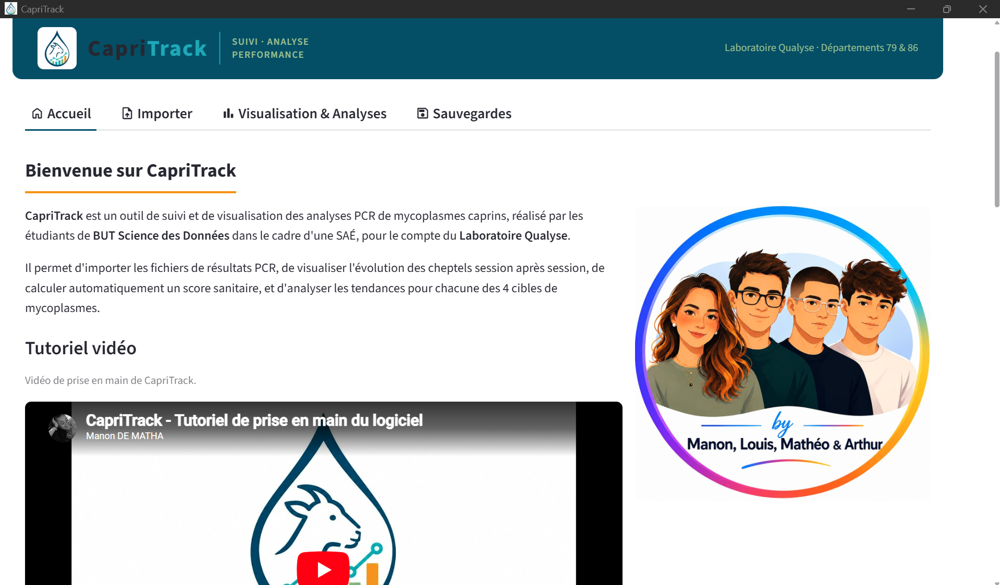
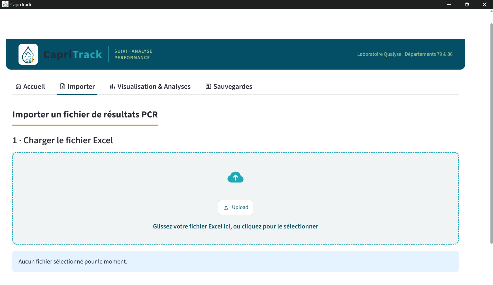
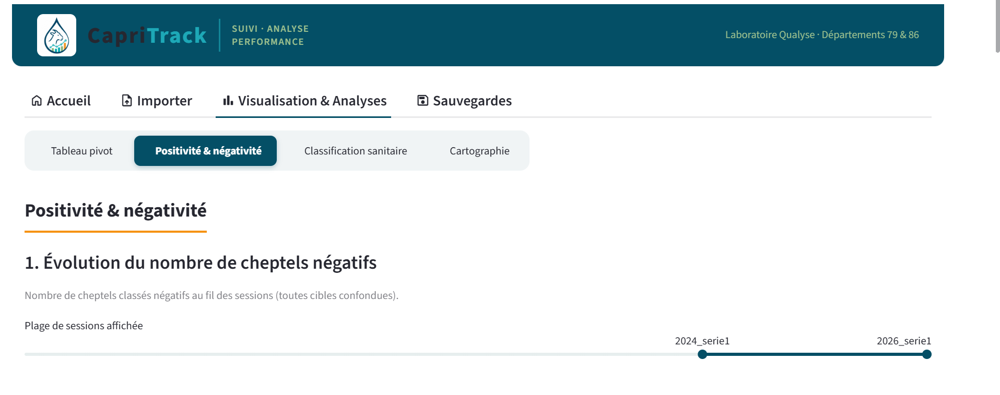

📊 SAÉ — Analyse de données, reporting et datavisualisation
Création d'un outil pour un laboratoire vétérinaire. Utilisation de la méthode agile (SCRUM).
Ce projet fut le dernier vrai projet de l'année. Pour la première fois, nous avons eu un vrai commanditaire : le laboratoire Qualiz. Ce laboratoire gère les analyses bactériennes des cheptels du 86 et du 79, entre autres. L'un de leurs employés avait une vraie problématique : il devait, à la main, créer un tableau de synthèse des résultats des différentes années afin d'établir une classification. Qui dit opération répétitive à la main dit opération chronophage et potentiellement source d'erreurs. Pour trouver une solution, il nous a été proposé, sur nos 2 dernières semaines de cours, de créer un outil pour prendre en charge ce processus.
Dans une base de données, nous devions pouvoir stocker les informations des différentes années, créer la classification et l'exporter. De plus, nous devions également proposer des indicateurs statistiques. Les technologies étaient libres. Nous devions également appliquer la méthode agile (SCRUM) pour la gestion du projet. L'équipe était donc composée de 4 personnes, dont un Scrum Master (dans notre cas). L'outil devait être le plus simple à utiliser possible.
Nous avons fait le choix de partir sur Python (pour sa grande polyvalence) avec une interface graphique en Streamlit (programmation Python web) et une base de données SQLite (tous les avantages d'une base de données sans serveur à lancer). Nous avons également appliqué le management visuel ainsi que le développement collaboratif avec GitHub. Nous avons fait un rendu sous forme d'application installable et lançable avec un .exe.
Pour ma part, je me suis occupé de la partie back de l'importation, de la normalisation et de la mise en base des données. À noter que les données avaient besoin de normalisation et de vérification avant import, en raison de leur qualité dégradée par l'action humaine. J'ai utilisé des technologies comme pandas, sqlite3, re (expressions régulières), os, datetime et unicodedata. Pour des raisons de RGPD, l'application ne sera pas disponible avec les données du laboratoire.
Pour nous aider à comprendre le contexte métier, le professionnel du laboratoire est resté à notre disposition. J'ai également été l'un des 2 élèves qui se sont occupés de la centralisation de la communication (pour éviter d'envoyer 10 fois la même question, par exemple).
Pour ma part, ce travail m'a profondément fait remettre en cause l'utilisation de l'IA générative dans mon apprentissage et dans mes travaux (de groupe notamment).
Il y a eu plusieurs formes de rendu sur ce projet. Tout d'abord une soutenance en anglais pour présenter notre production au professeur. Ensuite un compte rendu individuel et un compte rendu collectif (pour l'analyse), ainsi qu'une vidéo de présentation. Et bien sûr notre livrable (application).
- Installation de l'application, lancement en .exe.
- Insertion robuste de nouvelles données, détection automatique des paramètres et prévisualisation avec possibilité de modifier avant import.
- Affichage du tableau de résultats, de la classification et de graphiques informatifs (notamment des cartographies). Le tout avec des options de filtrage et la possibilité d'export.
- Système de backup de la base de données.
Les 2 principales difficultés ont été la compréhension du contexte métier et la coordination du travail d'équipe.



- Habileté sur Python.
- Travail d'équipe.
- Capacité à travailler avec des méthodes agiles en gestion de projet (SCRUM).
- Compréhension de la nécessité de créer du code robuste et flexible.
- Habileté à gérer le cycle de la donnée.
- Habitude sur les structures de données (dataframe) et les méthodes algorithmiques.
- Gestion de la communication entre une base de données (SQLite) et un logiciel Python.
- Intégration de logique backend dans une interface (frontend).
- Habitude à communiquer avec un commanditaire non spécialiste de la data.
- Capacité à restituer un projet sous différentes formes et en différentes langues.
- Habitude à s'exprimer en anglais sur un produit technique.
Prendre conscience de l'intérêt de la programmation.
Parmi les apprentissages critiques (éléments à maîtriser dans la formation, à dimension très académique), je pense que ce projet correspond le mieux à celui cité ci-dessus. Même si j'avais déjà conscience de l'utilité de la programmation, ce projet m'a quand même permis, pour la première fois, de servir un vrai commanditaire (autre que moi) pour une tâche utile. Ce n'est qu'ainsi que l'on peut comprendre à quel point la programmation peut être un bel outil pour faciliter la vie de nombreuses personnes (notamment par l'automatisation de tâches fastidieuses).